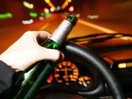
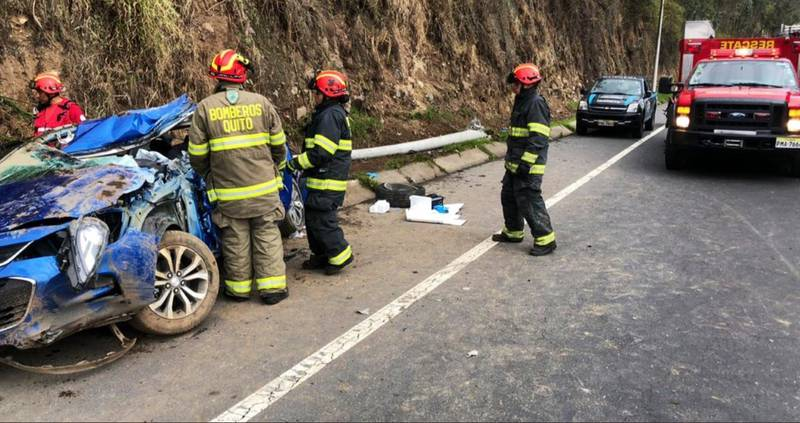
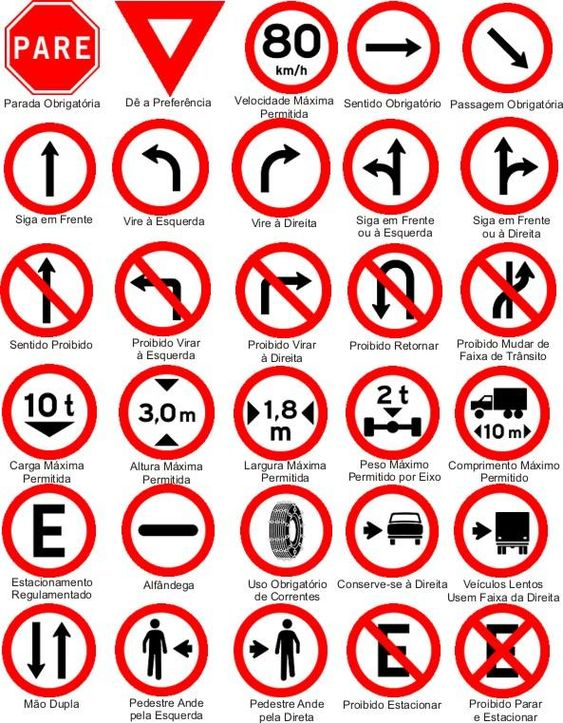

Un accidente automovilístico puede ocasionar lesiones graves o
la muerte, dejando a las víctimas y sus familias inseguras de su
futuro financiero. En Worby Vecchio Edelman, LLP, en White
Plains, Nueva York.
Cuales son las Principales Causas de los Accidentes de Transito
Es responsabilidad de cada conductor conducir de la manera más segura
posible, pero aún así, algunos conductores son negligentes al volante.
Desafortunadamente, la negligencia del conductor puede tener graves
consecuencias. Entendiendo las causas principales de las muertes por
accidentes automovilísticos puede ayudar a las personas a evitar accidentes
fatales y mantenerse a salvo en la carretera.
Como podemos prevenir los accidentes de transito
Recomendaciones para prevenir accidentes automovilísticos
Centra tu atención en tu entorno en todo momento.
Evita distracciones mientras conduces.
Mantén una distancia de seguridad adecuada.
No excedas los límites de velocidad.
utiliza el cinturón de seguridad.
Evita el consumo de alcohol si vas a manejar.
Para evitar la siniestralidad en la Semana Mayor, el INTRANT también
exhorta que cada conductor revise los neumáticos, las luces, el
nivel de aceite, los parabrisas y el líquido de freno del vehículo
antes de maniobrar, así como respetar a los demás
conductores, peatones, ciclistas y motociclistas.

tipos de personas de servicios publicos
1- la policia
2-digesett
3-los amets
4-las anbulancia
5-cuerpo de bonbero
1-El de chaleco verde que es el AME.
2-El del chaleco verde luminico es la digesett

algunas ceñales de transito

¿Para qué sirven las señales de tránsito?
Saber para qué sirven las señales de tránsito es necesario, ya que solo así conductores y peatones puedan circular de forma controlada y segura las distintas vías y caminos, es indispensable reconocerlas y acatar sus indicaciones, pues es la mejor manera de evitar accidentes automovilísticos,

jQuery Back To Top Button by CodexWorld
Top
Tres consecuencias de un accidente de transito
Los accidentes de tránsito suelen ser un tema del que nadie escapa, hasta la persona más prudente
se le puede ponchar una llanta y quedar a mitad de la vía expuesta a una colisión, es decir más allá de lo precavido y la seguridad que practiques al conducir es un tema de suerte se podría decir.
Puedes conducir muy bien y ser cuidadoso y ser chocado por el vehículo que está detrás de ti, porque esta apurado, desesperado, o a ingerido algo de alcohol. Así como también puedes ir a un ritmo moderado y ser chocado por
el descuido de un conductor que se quedó dormido.
Hay un sinfín de probabilidades y consecuencias a las que estamos expuesto al conducir y transitar una vía con otros vehículos, lo importante de esto es ser precavido, conducir seguro y estar latente y pendiendo a cualquier imprevisto, porque en el momento menos se cree pasa algún imprevisto.
.la muerte
La muerte va ser sin duda la principal consecuencia dentro de un accidente de tránsito, nadie quiere pasar por este tedioso momento, la persona que es impactada sufre mientras muere, la persona que es culpable se desespera por este hecho, el cual podrá traerle consecuencias como la cárcel, aparte de lo económico.
Las aseguradoras entran en tela de juicio, los familiares de la víctima demandan una indemnización, es sin duda un hecho lamentable el cual puede pasar por diferentes causas, desde no llevar el cinturón de seguridad hasta conducir bajo los efectos del alcohol.
Estas muertes pueden estar asociadas a cualquier accidente de tránsito entre dos o más vehículos. La muerte sigue cobrando vidas a través del años, diferentes países han tenido notables avances para prevenir de alguna forma los accidentes de tránsitos pero de igual forma no han podido parar de cierta forma las pérdidas de vidas en los accidentes de tránsitos..
. pérdidas económicas
Para las aseguradoras son un dolor de cabeza los accidentes de tránsitos que se presentan en sus asegurados días tras días, es un problema que abarca diferentes puntos, quien es el culpable, cuantos daños tiene el vehículo ocasionado, se debe o no hacer responsable la aseguradora, son algunas de las variantes que se presentan.
La aseguradora gana cuando no hay choque, ellos no necesitan de ningún choque o imprevisto, ellos solo necesitan que sus clientes paguen al día, aunque muchas aseguradoras responde en los choques e incidentes imprevistos en sus vehículos asegurados es un proceso tedioso tanto para ellos como para el asegurado.
Además de esto las personas que no tienen su vehículo asegurado deberán hacerse responsable de los daños ocasionados en sus vehículos y si pierden el choque es peor el caso deberán reparar sus vehículos y el vehículo al cual chocaron.
Son las pérdidas materiales y económicas otra gran consecuencia en los accidentes de tránsitos..
Las lesiones y traumatismos
Por otra parte a pesar de no conllevar a la muerte como tal los traumatismos y lesiones, golpes y fracturas fuertes son otra de las consecuencias resultantes de los accidentes de tránsito.
Obviamente la consecuencia la lleva la persona que sufre la lesión, el tiempo de recupera miento, el no poder asistir a su lugar de trabajo, a la universidad, el no poder salir a pasear.
Las personas que padecen un accidente de tránsito pueden estar determinado tiempo en silla de ruedas, o con muletas y con tornillos en las piernas, algún brazo dislocado todo esto hace que el tiempo de reposo sea incómodo.
El tener que pasar un tiempo de recuperación con limitaciones lo hace más incómodo y desgastante, todas las lesiones y traumatismos son otra de las grandes consecuencias de los accidentes de tránsito.
Seguridad vial Tarea de todos
Juego de 3 en raya
JUEGO DE LAS TRES EN RAYA
Cuales son las Principales Causas de los Accidentes de Transito
Como podemos prevenir los accidentes de transito
Recomendaciones para prevenir accidentes automovilísticos
Centra tu atención en tu entorno en todo momento. Evita distracciones mientras conduces. Mantén una distancia de seguridad adecuada. No excedas los límites de velocidad. utiliza el cinturón de seguridad. Evita el consumo de alcohol si vas a manejar.
Para evitar la siniestralidad en la Semana Mayor, el INTRANT también exhorta que cada conductor revise los neumáticos, las luces, el nivel de aceite, los parabrisas y el líquido de freno del vehículo antes de maniobrar, así como respetar a los demás conductores, peatones, ciclistas y motociclistas.tipos de personas de servicios publicos
1- la policia 2-digesett 3-los amets 4-las anbulancia 5-cuerpo de bonbero1-El de chaleco verde que es el AME.
2-El del chaleco verde luminico es la digesett
algunas ceñales de transito
¿Para qué sirven las señales de tránsito?
Saber para qué sirven las señales de tránsito es necesario, ya que solo así conductores y peatones puedan circular de forma controlada y segura las distintas vías y caminos, es indispensable reconocerlas y acatar sus indicaciones, pues es la mejor manera de evitar accidentes automovilísticos,
Tres consecuencias de un accidente de transito
Los accidentes de tránsito suelen ser un tema del que nadie escapa, hasta la persona más prudente se le puede ponchar una llanta y quedar a mitad de la vía expuesta a una colisión, es decir más allá de lo precavido y la seguridad que practiques al conducir es un tema de suerte se podría decir.
Puedes conducir muy bien y ser cuidadoso y ser chocado por el vehículo que está detrás de ti, porque esta apurado, desesperado, o a ingerido algo de alcohol. Así como también puedes ir a un ritmo moderado y ser chocado por el descuido de un conductor que se quedó dormido.
Hay un sinfín de probabilidades y consecuencias a las que estamos expuesto al conducir y transitar una vía con otros vehículos, lo importante de esto es ser precavido, conducir seguro y estar latente y pendiendo a cualquier imprevisto, porque en el momento menos se cree pasa algún imprevisto. .la muerte La muerte va ser sin duda la principal consecuencia dentro de un accidente de tránsito, nadie quiere pasar por este tedioso momento, la persona que es impactada sufre mientras muere, la persona que es culpable se desespera por este hecho, el cual podrá traerle consecuencias como la cárcel, aparte de lo económico. Las aseguradoras entran en tela de juicio, los familiares de la víctima demandan una indemnización, es sin duda un hecho lamentable el cual puede pasar por diferentes causas, desde no llevar el cinturón de seguridad hasta conducir bajo los efectos del alcohol. Estas muertes pueden estar asociadas a cualquier accidente de tránsito entre dos o más vehículos. La muerte sigue cobrando vidas a través del años, diferentes países han tenido notables avances para prevenir de alguna forma los accidentes de tránsitos pero de igual forma no han podido parar de cierta forma las pérdidas de vidas en los accidentes de tránsitos..
.pérdidas económicas Para las aseguradoras son un dolor de cabeza los accidentes de tránsitos que se presentan en sus asegurados días tras días, es un problema que abarca diferentes puntos, quien es el culpable, cuantos daños tiene el vehículo ocasionado, se debe o no hacer responsable la aseguradora, son algunas de las variantes que se presentan. La aseguradora gana cuando no hay choque, ellos no necesitan de ningún choque o imprevisto, ellos solo necesitan que sus clientes paguen al día, aunque muchas aseguradoras responde en los choques e incidentes imprevistos en sus vehículos asegurados es un proceso tedioso tanto para ellos como para el asegurado. Además de esto las personas que no tienen su vehículo asegurado deberán hacerse responsable de los daños ocasionados en sus vehículos y si pierden el choque es peor el caso deberán reparar sus vehículos y el vehículo al cual chocaron.
Son las pérdidas materiales y económicas otra gran consecuencia en los accidentes de tránsitos..Las lesiones y traumatismos Por otra parte a pesar de no conllevar a la muerte como tal los traumatismos y lesiones, golpes y fracturas fuertes son otra de las consecuencias resultantes de los accidentes de tránsito. Obviamente la consecuencia la lleva la persona que sufre la lesión, el tiempo de recupera miento, el no poder asistir a su lugar de trabajo, a la universidad, el no poder salir a pasear. Las personas que padecen un accidente de tránsito pueden estar determinado tiempo en silla de ruedas, o con muletas y con tornillos en las piernas, algún brazo dislocado todo esto hace que el tiempo de reposo sea incómodo. El tener que pasar un tiempo de recuperación con limitaciones lo hace más incómodo y desgastante, todas las lesiones y traumatismos son otra de las grandes consecuencias de los accidentes de tránsito.
Seguridad vial Tarea de todos| JUEGO DE LAS TRES EN RAYA |